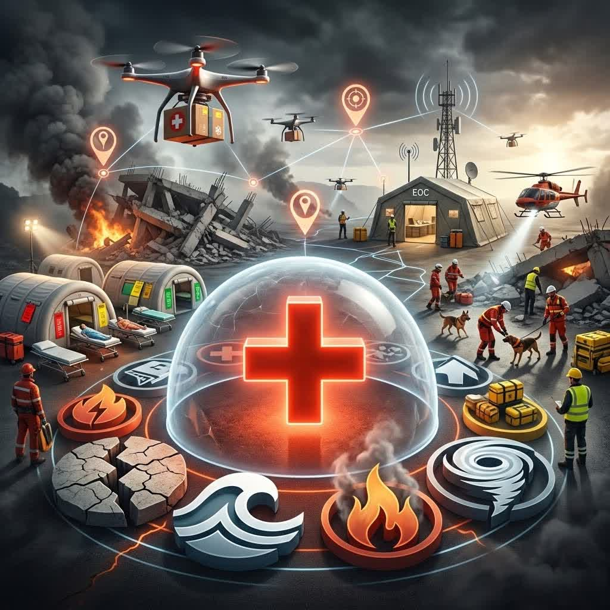
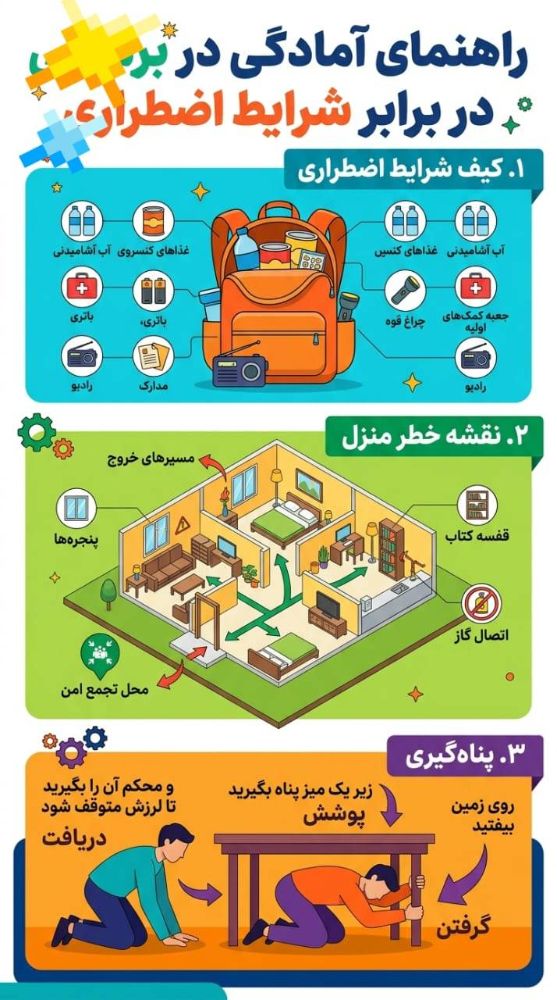
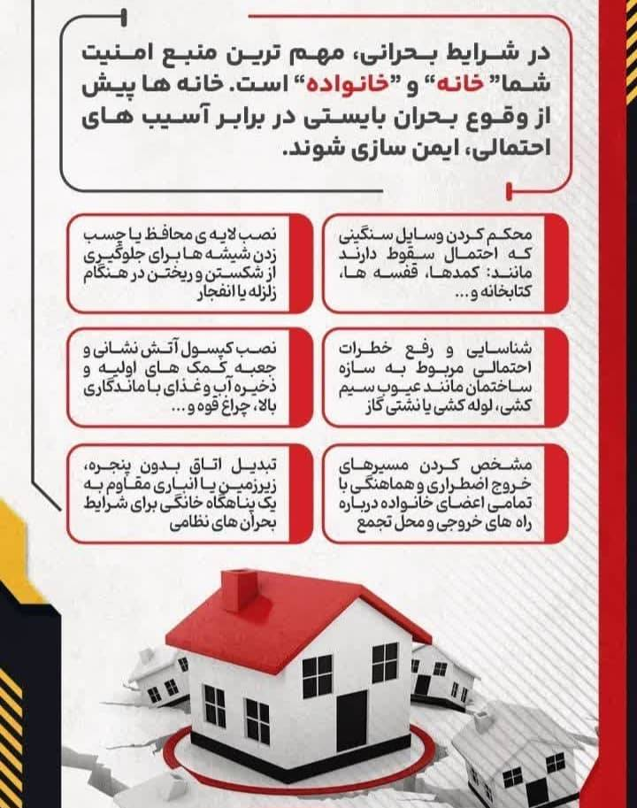
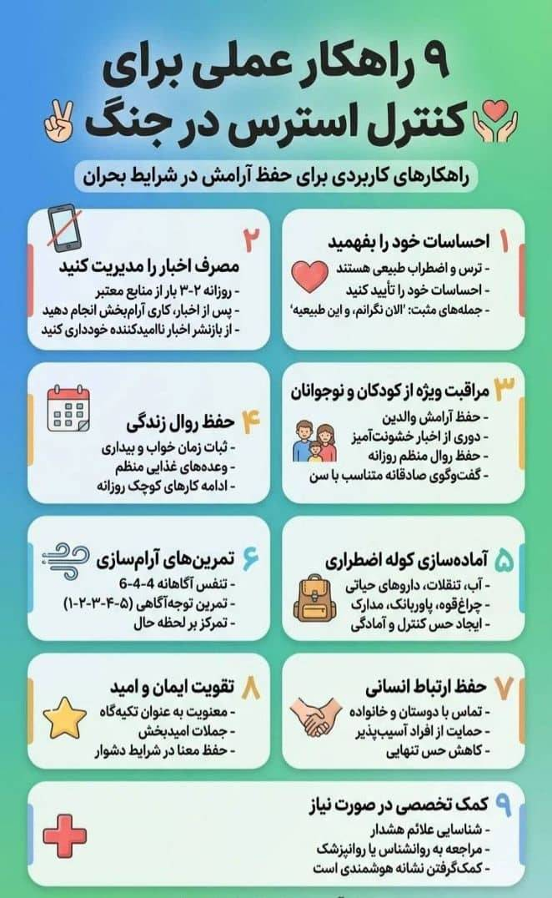
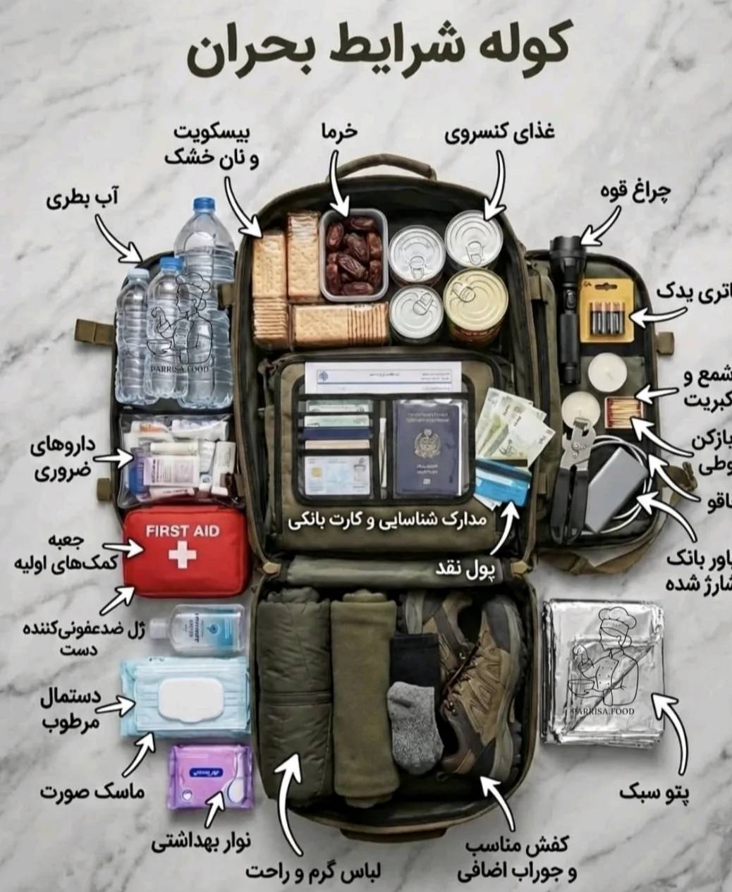
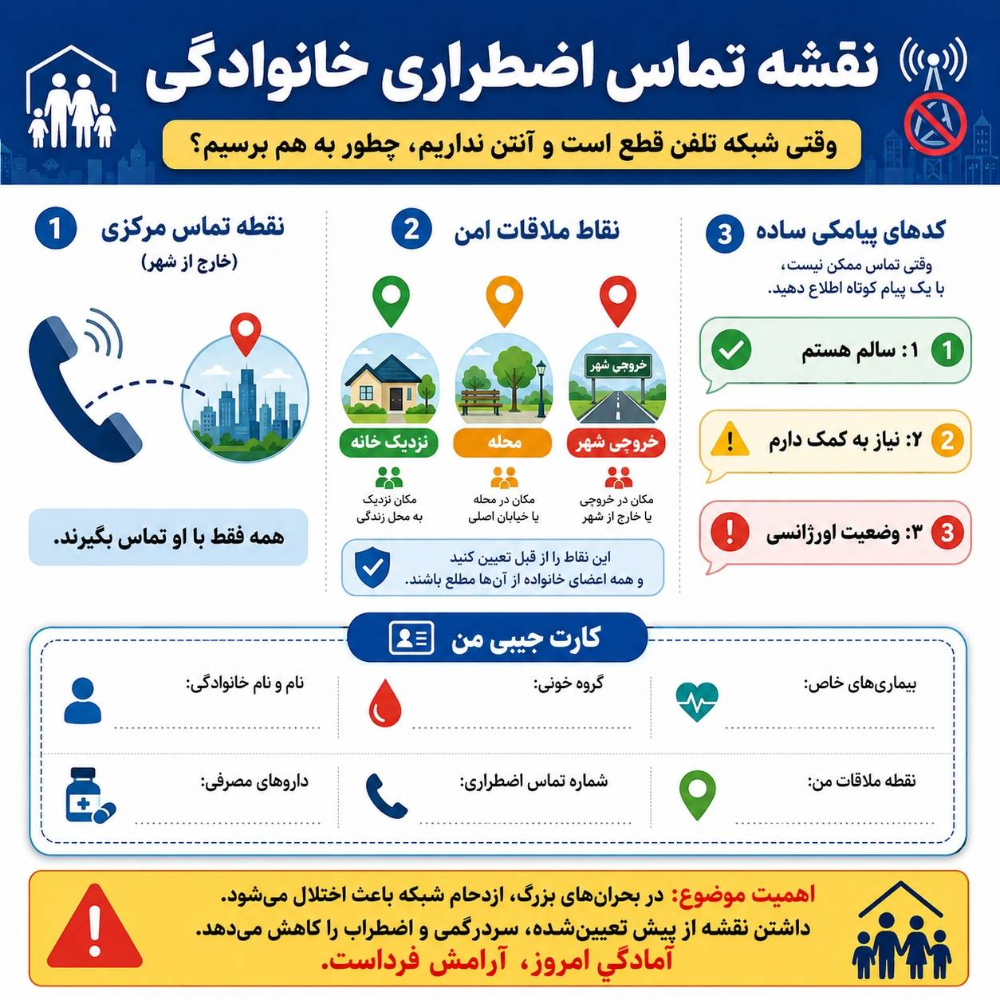
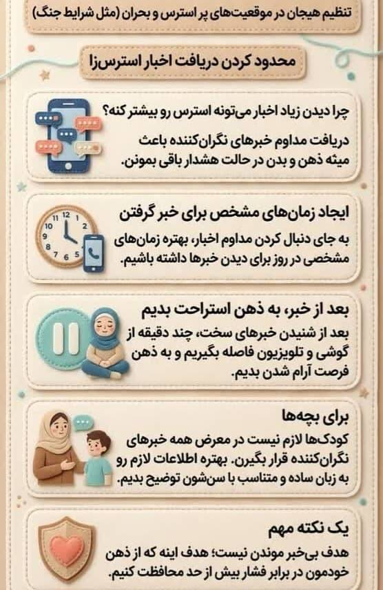
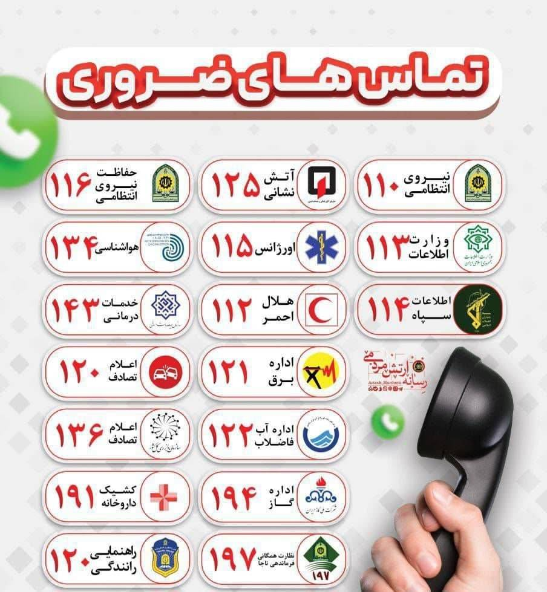
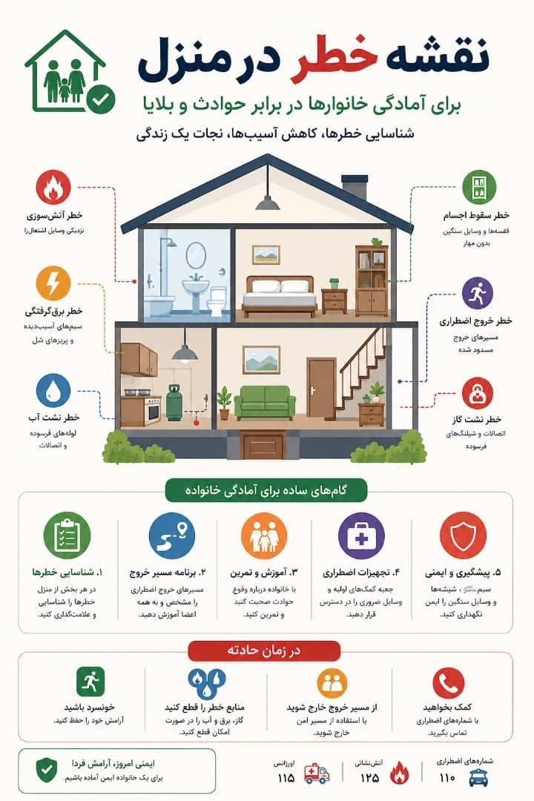

سلامت در بلایا و فوریتها

معرفی رشته
مدیریت سلامت در بلایا (Disaster Health Management) به برنامهریزی، پاسخدهی و بازیابی نظام سلامت پس از وقوع بلایای طبیعی (زلزله، سیل، طوفان) و انسانساخت (جنگ، حوادث شیمیایی، بیوتروریسم) میپردازد. این رشته تلفیقی از پزشکی اورژانس، مدیریت بحران، بهداشت عمومی و توانبخشی است و هدف آن کاهش مرگ و میر و عوارض ناشی از بلایا است.
اهداف رشته
- کاهش آسیبپذیری جامعه در برابر بلایا (مدیریت ریسک)
- طراحی سیستمهای هشدار سریع و برنامههای تخلیه اضطراری
- هماهنگی تیمهای واکنش سریع پزشکی و امدادی
- ارزیابی سریع خسارات و نیازهای سلامت در بحران
- بازسازی نظام سلامت پس از بلایا و ارائه خدمات توانبخشی
مهارتهای کسبشده
- برنامهریزی عملیاتی در بحران (توسعه سناریو، تریاژ، مدیریت منابع)
- راهاندازی بیمارستان صحرایی و مراکز درمان موقت
- مدیریت لجستیک دارو، تجهیزات و زنجیره تأمین در بلایا
- ارتباط مؤثر با سازمانهای امدادی (هلال احمر، سازمان بحران، ارتش)
- ارزیابی روانی و اجتماعی پس از سانحه (PTSD و مداخلات روانی)
دروس تخصصی
- کاهش خطر بلایا (DRR) و تحلیل آسیبپذیری
- بهداشت محیط در بلایا (آب، غذا، دفع زباله)
- مدیریت تلفات جمعی (سردخانه موقت، شناسایی اجساد)
- توانبخشی پس از سانحه (فیزیوتراپی، حمایت روانی)
- مدیریت پناهگاههای بهداشتی و جلوگیری از اپیدمی
- فرماندهی حادثه (ICS) و هماهنگی بینبخشی
بازار کار
فارغالتحصیلان میتوانند در سازمان مدیریت بحران کشور، هلال احمر، وزارت بهداشت (معاونت درمان و بهداشت در حوزه بلایا)، سازمانهای بینالمللی مانند WHO، یونیسف، OCHA، صلیب سرخ و همچنین بیمارستانهای آموزشی دارای بخش مدیریت بلایا مشغول شوند. همچنین نقشهایی مانند مدیر پاسخ به بحران، مشاور ایمنی بیمارستان، کارشناس ارشد کاهش خطر بلایا از جمله فرصتها هستند.
ادامه تحصیل
کارشناسی ارشد و دکتری تخصصی سلامت در بلایا و فوریتها در دانشگاههای علوم پزشکی تهران، ایران، کرمان، شیراز و اصفهان ارائه میشود. همچنین دورههای تخصصی بینالمللی از سوی WHO و سازمان ملل وجود دارد.
آینده شغلی
با توجه به تغییرات اقلیمی و افزایش بلایای طبیعی، نیاز به متخصصان مدیریت سلامت در بلایا به شدت رو به رشد است. موقعیتهایی مانند مدیر برنامههای آمادگی در بیمارستانها، مشاور ایمنی و پدافند غیرعامل، هماهنگکننده تیمهای واکنش سریع بینالمللی و پژوهشگر نظامهای سلامت در بحرانها از جمله چشماندازهای شغلی است.
سوالات متداول
خیر، فارغالتحصیلان مدیریت، پرستاری، بهداشت عمومی، مهندسی و حتی علوم اجتماعی نیز میتوانند در آن تحصیل کنند.
بله، سازمانهای بینالمللی مانند OCHA، صلیب سرخ، MSF و WHO متخصصان این حوزه را استخدام میکنند.
برای مأموریتهای امدادی، آمادگی جسمانی متوسط توصیه میشود، اما بسیاری از مشاغل آن مدیریتی و برنامهریزی است.
🖼 گالری تصاویر

اینفوگرافی

آمادگی خانوار

آمادگی ساختمان

کنترل استرس در جنگ

کوله شرایط اضطراری

نقشه تماس اضطراری

مدیریت اخبار در جنگ

تماس های ضروری

نقشه خطر منزل
برای دیدن تصویر در اندازه بزرگ، روی آن کلیک کنید.